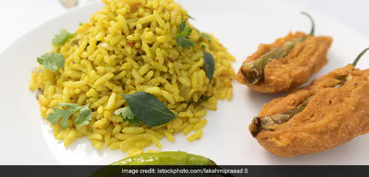

Uggani

Description
Uggani is a variety in Upma made from Puffed rice. One can find it very common in North Karnataka
and parts of Andhra Pradesh. Easy to make and yummy to taste, enjoy them as a breakfast or snack
or light dinner.
Serve Uggani along with Fresh Fruit Bowl And Filter Coffee for your everyday breakfast.
Ingredients
- 3 cups of puffed rice
- 2 tbsp oil
- 1 medium chopped onion and tomato
- 6-7 coriander leaves
- 1/2 tbsp lemon juice
- 4-5 tbsp gram dal
- 3 tbsp peanuts
- 6-7 curry leaves
- salt, turmeric powder, red chilli powder to taste
Steps
- Wash the puff rice in cold water and squeeze out the excess water.
-
In a pan add oil, curry leaves, mustard seeds, urad dal and peanuts. Cook it until they
are soft brown.
- Throw in the salt, turmeric and chilli powder as per your taste.
- Then add your chopped onion and tomato. Cook for 5 minutes on low heat.
- When the onions and tomatoes are soft, add your puffed rice.
- Give them a good mix and put your uggani in a bowl.
- At last garnish it with coriander leaves and enjoy!